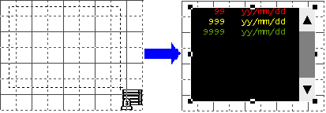

|
|
|
|
|
|
|
|
To display alarms in a PLC's diagnostic buffer on the target machine, add a diagnostic alarm group and then assign the diagnostic alarm group to an alarm summary.
In the I/O Manager node, set up equipment that supports the diagnostic buffer.

For a list of PLCs that support the diagnostic buffer, see Section 5.5, Working with Alarms on the Equipment (Diagnostic Buffer).
Right-click the Alarms node and select New Diagnostic Alarm Group. The Diagnostic Alarm Group editor will display.

You can add a combined total of 32 alarm groups and diagnostic alarm groups in a single target.
You can add a maximum of 14 diagnostic alarm groups in a project.
For example, you can have 14 targets with one diagnostic alarm group per target, all connected to one PLC. Or you can have two targets with seven diagnostic alarm groups per target, with both connected to one PLC. The distribution of diagnostic alarm groups across multiple targets does not matter, only the total number connected to one PLC.
The number of areas to monitor specified in the Diagnostic Alarm Group editor for each group does not affect how many viewers can be connected to a PLC.
Define the settings for the diagnostic alarm group. Group Setting properties define the settings for each diagnostic alarm group. The Global Setting property defines the setting for all diagnostic alarm groups.
|
Property |
Description |
|
|
Group Setting |
Equipment |
Select the PLC equipment set up with diagnostic buffer alarms. The protocol for the selected Equipment enables communication with the PLC so diagnostic alarm information can be passed back and forth. Only drivers that support diagnostic buffer are listed in this field. |
|
Areas to Monitor |
The PLC configuration software divides the diagnostic buffer alarms into different areas. Select the check boxes of areas in the diagnostic buffer you want to display on the target machine.
|
|
|
Polling Rate |
Select the rate at which you want to check the PLC for new alarm records. You can enter values between 0.1 and 90.0 seconds. |
|
|
Severity |
This field is used when the diagnostic alarm group is in an alarm category and is displayed in an alarm summary sorted by severity, all alarms in the diagnostic alarm group are assigned the selected Severity value. |
|
|
Enable Fast Reload |
When the target machine connects to the PLC, at startup or when recovering from a communication failure, select Fast Reload to read all the alarms one after another. After all the alarms are read, the diagnostic alarm group uses the defined Polling Rate to continue monitoring alarms. |
|
|
Global Setting |
Encoding |
This field allows you to select the character encoding for all diagnostic alarm groups so that the correct character set will be used to display diagnostic buffer alarm messages at run time. Select ASCII, ANSI, Unicode, Simplified Chinese, or Traditional Chinese. |
After you configure the diagnostic alarm group settings, select the Alarm Summary icon in the Graphical Objects toolbar and draw the alarm summary on the panel.

In the alarm summary settings, select the newly created diagnostic alarm group in the Alarm Group property.

For information on displaying multiple diagnostic alarm groups in the same alarm summary, see Section 16.3.2.2, Displaying Multiple Diagnostic Alarm Groups in an Alarm Summary.
Click the Columns tab and add the Area Number column to display the alarm's diagnostic buffer area.
Refer to the property descriptions in Section 16.2.6, Setting Up an Alarm and Event Summary to customize the alarm summary display.